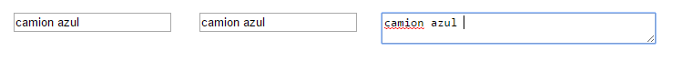
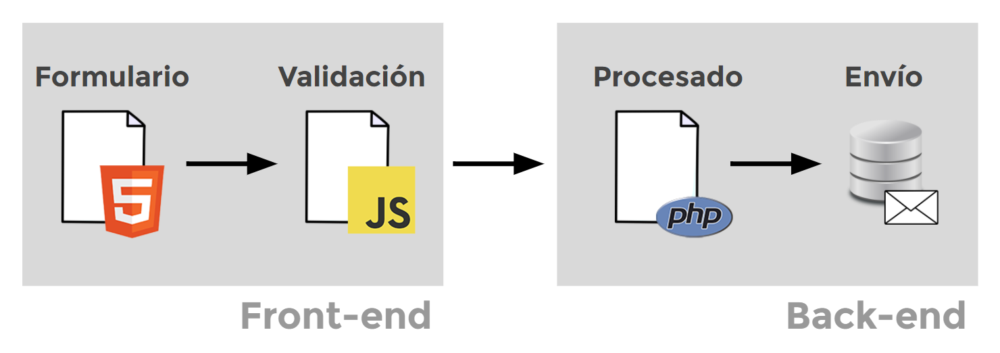
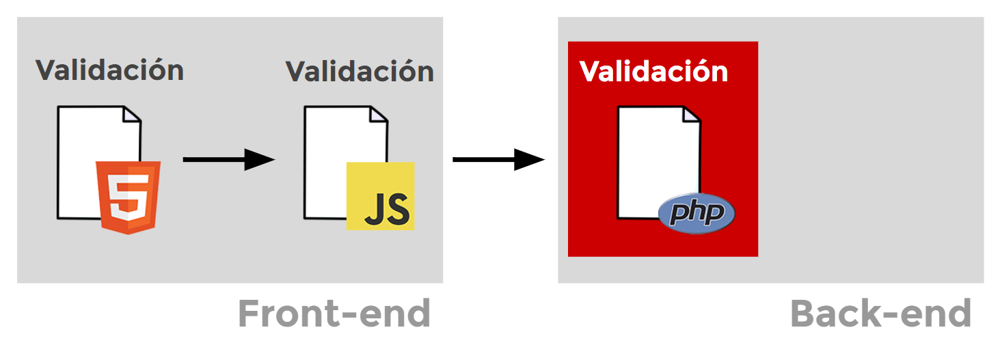
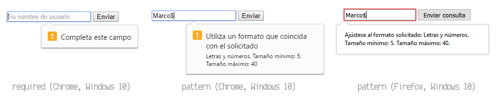

Etiquetas de formularios¶
Creación de un formulario¶
HTML5 proporciona una serie de etiquetas interesantes para utilizar en formularios (además de las ya existentes en versiones anteriores). Los formularios son una forma sencilla de establecer mecanismos para que el usuario pueda introducir información en una página web de forma sencilla e intuitiva, y el sitio web sea capaz de procesarla correctamente y añadirla en una base de datos de la página, enviarla por email o procesarla para mostrar información final al usuario.
Nuestros objetivos al crear un formulario HTML5 deben ser los siguientes:
- Hacer lo más sencillo posible el proceso de inserción de datos por parte del usuario.
- Intentar que la experiencia de usuario sea lo más agradable posible.
- Intentar que los datos introducidos estén en un formato predecible y esperado.
- Reducir los errores al introducir datos en la medida de lo posible.
- Comunicar claramente si ocurren errores al introducir datos.
Contenedor de formulario¶
Para comenzar con la creación de un formulario, el primer paso es indicar una etiqueta contenedora <form>, que incluirá toda la información que se quiere recoger en ese formulario:
<form></form>
De esta forma, se puede incluso crear varias etiquetas <form> por página, pudiendo así crear varios formularios diferentes, como por ejemplo, uno para realizar una búsqueda en la página, otro para dejar un comentario y otro para enviar un email al autor.
!!!
También es posible colocar campos de formulario fuera de una etiqueta <form>, sin embargo, no tendrán un funcionamiento específico y necesitaría manejarse desde Javascript.
La etiqueta <form> dispone de varios atributos para utilizar:
| Atributo | Valor | Descripción |
|---|---|---|
action |
URL | Dirección URL del back-end donde se enviará la información del formulario. |
method |
get | post |
Método HTTP de envío. GET a través de URL, POST para envío extenso. |
name |
nombre | Nombre del formulario. Útil para procesar posteriormente. |
target |
destino | Nombre del lugar donde se abrirá el formulario. \_blank para nueva pestaña. |
enctype |
_tipo_Codificación para el envío del formulario. Importante para envío de archivos. | |
accept-charset |
codificación | Fuerza a utilizar una codificación en los parámetros de texto del formulario. |
autocomplete |
on | off |
Activa o desactiva el autocompletado para todos los campos del formulario. |
novalidate |
Boolean | Con este atributo presente, el formulario obvia la validación HTML5. |
Así pues, un primer formulario base de ejemplo (aún vacío, sin campos de entrada de datos, sólo con la etiqueta contenedora) podría ser el que vemos en el siguiente ejemplo:
<form name="formulario" method="post" action="/send.php"></form>
Nótese que se definen 3 atributos base en <form>:
- En
actionse indica la dirección donde se enviarán los datos cuando el usuario pulse el botón de enviar. En caso de omitirse esta información, se enviarían los datos a la propia página actual, volviéndola a cargar. - En
methodse define el tipo de método HTTP a utilizar. Utilizaremos el métodoGETcuando nos interese que los datos se envíen en la propia URL. En caso contrario,POST. - En
nameel nombre del formulario para cuando necesitemos hacer referencia a él (generalmente desde Javascript o desde backend).
Tipos de datos¶
Para que un usuario pueda introducir información en un formulario, requiere que se le indiquen una serie de campos que le permitan introducir la información de la forma más cómoda y rápida posible. Para ello, debemos saber a priori que tipo de dato le vamos a pedir al usuario (texto, numérico, fecha, etc...), y así saber que tipo de campo de entrada de datos es más conveniente colocar.
| Información a obtener | Ejemplos | Etiqueta y atributo a utilizar |
|---|---|---|
| Información de texto | Nombres, apellidos, direcciones físicas... | <input> - <textarea> |
| Números o cantidades | Edades, precios, cuantías... | <input> para números |
| Fechas u horas | Fecha de nacimiento, inicio de evento... | <input> para fechas |
| Verdadero/falso | Si/No, Opción A/B, ON/OFF... | <input type="checkbox"> |
| Opción única | (Elegir una opción de 2 ó más posibles) | <input type="radio"> - <select> |
| Varias opciones | (Elegir varias opciones de 2 ó más posibles) | <select multiple> - <input type="checkbox"> |
| Opción única abierta | (Elegir una opción o indicar una propia) | <datalist> |
| Selección de color | (Escoger un color o tonalidad) | <input type="color"> |
| Selección de archivo | (Escoger un archivo para enviar) | <input type="file"> |
En HTML5, de forma nativa, el navegador proporciona estos campos de entrada en los que el usuario puede introducir información específica. Cada uno de ellos tiene sus propias particularidades y características, además de que hay que tener cuidado con algunos, ya que pueden no estar soportados por completo en todos los navegadores.
Campos de entrada¶
Una de las etiquetas que más utilizaremos para obtener información a modo de campo de entrada de datos en un formulario es la etiqueta <input>. Su funcionalidad más utilizada es la de servir como campo de texto:
<form name="formulario" method="post" action="/send.php">
<!-- Primer campo de entrada de datos -->
Nombre de usuario:
<input type="text" name="nombre" value="" />
<!-- Botón de envío del formulario -->
<input type="submit" value="Enviar" />
</form>
En este ejemplo tenemos un pequeño formulario donde se le pide al usuario su nombre con la etiqueta <input type="text"> y, posteriormente, se coloca un botón para enviar el formulario con la etiqueta <input type="submit">. Aunque vemos que se trata de la misma etiqueta <input>, dependiendo del valor indicado en el atributo type realizará una tarea u otra.
La etiqueta "input"¶
La etiqueta <input> tiene una gran cantidad de atributos (algunos dependiendo del valor de type, que mostraremos más adelante). Estos son los atributos que podemos utilizar de forma general para prácticamente cualquier campo de entrada de datos con la etiqueta <input>:
| Atributo | Valor | Descripción |
|---|---|---|
type |
tipo de campo | Indica el tipo de campo del que se trata. |
name |
nombre del campo | Indica el nombre del campo para hacer referencia más tarde. |
value |
valor por defecto | Indica el valor inicial que tendrá ese campo de datos.form |
placeholder |
sugerencia | Indica una sugerencia al usuario antes de escribir. |
size |
número | Tamaño visual (número de carácteres) del campo de datos. |
autocomplete |
on | off |
Activa o desactiva el autocompletado para este campo. |
autofocus |
- | Establece el foco (coloca el cursor) en este campo al cargar la página. |
El atributo type nos permitirá indicar que tipo de campo de dato mostrará en el navegador (text, number, date... los veremos más adelante). Mediante el atributo name le daremos un nombre al campo de texto, así cuando enviemos la información del formulario, podremos manejarla desde javascript o desde el back-end haciendo referencia a dicho nombre.
Iremos viendo más atributos en cada campo específico que trataremos en los siguientes temas.
Controles: Campos de texto¶
La etiqueta HTML <input> puede tomar varios valores diferentes en su atributo type para permitir al usuario introducir información de texto, además de otra etiqueta denominada <textarea> para cantidades de texto más grandes como varios párrafos.
Según nuestras necesidades, tendremos varias opciones:
| Tipo de información a obtener | Etiqueta a utilizar | Ejemplo |
|---|---|---|
| Texto alfanumérico libre (texto corto) | <input type="text"> |
|
| Texto para búsquedas | <input type="search"> |
|
| Número de teléfono o móvil | <input type="tel"> |
|
| Dirección URL | <input type="url"> |
|
| Dirección de correo email | <input type="email"> |
|
| Clave o contraseña | <input type="password"> |
|
| Campo oculto (no mostrar al usuario) | <input type="hidden"> |
|
| Texto alfanumérico libre (extenso) | <textarea> |
Esto es un campo de texto más extenso, útil para textos de uno o más párrafos.
Texto alfanumérico corto¶
En primer lugar, si lo que queremos es guardar información de texto libremente, la opción más habitual es optar por utilizar el campo de entrada de datos <input type="text">. Este atributo es el que se utiliza en las etiquetas <input> por defecto si no indicamos ningún atributo type. Es un campo de texto ideal para fragmentos cortos de información: nombres, apellidos, direcciones físicas, etc...
En resumen, pequeños fragmentos de texto menores a un par de palabras. Un sencillo ejemplo:
<form name="formulario" method="post" action="/send.php">
<!-- Campo de entrada de datos -->
<input type="text" name="nombre" autocomplete="off"
placeholder="Introduce tu nombre de usuario" />
</form>
Obsérvese que además hemos indicado dos atributos adicionales:
- Autocompletado desactivado: No aparecerá información escrita anteriormente en ese campo.
- Placeholder: Es el texto que aparecerá a modo de sugerencia/ayuda para el usuario (en gris, ligeramente menos visible que el texto del campo). En cuanto el usuario escriba en el mismo, el mensaje desaparecerá. Sólo volvería a aparecer si el usuario decide borrar nuevamente la información que ha escrito en ese campo.
!!!
Es importante no escribir sugerencias de usuario en el atributo value, sino en placeholder. Utiliza el atributo value sólo si quieres indicar valores por defecto del campo.
Textos cortos específicos¶
Por otro lado, en HTML5 se añaden nuevos tipos para etiquetas <input> como search, tel, url o email. Aunque la idea es la misma que un campo de texto y en principio no notaremos ningún cambio, estos campos específicos tienen como objetivo hacer más sencillo el proceso de introducción de datos por parte del usuario.
Si utilizamos tel en vez de text, al hacer clic en el campo del formulario desde un smartphone/tablet, se nos desplegará el teclado numérico en lugar del teclado habitual, lo que nos facilitará en gran medida escribir el dispositivo móvil, ya que la intención es utilizar sólo caracteres para números. Lo mismo ocurre con los campos de tipo email o url, ya que nos mostrará un teclado con botones especiales con @, .com u otros atajos rápidos:
<form name="formulario" method="post" action="/send.php">
<!-- Campo de entrada de teléfono -->
Teléfono:
<input type="tel" name="telefono" placeholder="+XX XXX XXXXXX" />
<!-- Campo de entrada de email -->
Email:
<input type="email" name="correo" placeholder="nombre@dominio.com" />
<!-- Campo de entrada de url -->
Página web:
<input type="url" name="web" placeholder="https://pagina.com/" />
</form>
El atributo type también permite el valor search, que es muy similar a los anteriores. Se utiliza para campos orientados a la búsqueda de palabras o textos en un sitio web, mostrando desde dispositivos móviles una x para borrar la palabra escrita con un sólo clic.
Campos para contraseñas¶
La etiqueta <input> tiene el valor password en su atributo type para crear campos de texto orientados a almacenar información sensible como podrían ser contraseñas, claves o pins numéricos. Esto no lo convertiría en un campo más seguro técnicamente, sino que simplemente muestra puntos o asteriscos en lugar del texto visualmente, protegiéndolo visualmente de ojos ajenos.
Por otro lado también tenemos el tipo hidden, que se puede utilizar cuando queremos enviar información en el formulario, pero que no queremos que el navegador lo muestre visualmente en el formulario, como por ejemplo un código numérico o una id informativa:
<form name="formulario" method="post" action="/send.php">
<!-- Campo de entrada de usuario -->
Usuario:`
<input type="text" name="nombre" placeholder="Por ejemplo, Juan" />
<!-- Campo de entrada de password -->
Password:
<input type="password" name="pass" placeholder="Contraseña" />
<!-- Campo oculto: Este campo no se verá en el navegador -->
<input type="hidden" name="informacion" value="72625" />
</form>
Campos extensos de texto¶
Por último, si queremos indicar un campo para escribir textos más extensos, lo más apropiado es utilizar la etiqueta <textarea>, que tiene también algunos atributos adicionales:
| Atributo | Valor | Descripción |
|---|---|---|
cols |
número de columnas | Número de carácteres que caben en horizontal (columnas). |
rows |
número de filas | Número de carácteres que caben en vertical (filas). |
wrap |
soft | hard |
Indica si el texto debe enviarse recolocado o como se ve visualmente. |
Esta etiqueta nos permite añadir gran cantidad de texto, ya que las etiquetas <input type="text"> sólo nos permiten escribir una línea de texto y es muy incómodo si nuestra intención es escribir grandes cantidades de texto. Sus atributos cols y rows nos permiten aumentar el tamaño de ancho y alto, así como indicar si queremos que se modifique la apariencia visual del párrafo al enviar al formulario con el atributo wrap.
Un ejemplo básico de esta etiqueta <textarea>:
<form name="formulario" method="post" action="/send.php">
<!-- Area de texto extensa -->
<textarea name="texto" cols="80" rows="10" placeholder="Escribe aquí el texto...">
Este es el valor por defecto
</textarea>
</form>
Existen unas librerías de javascript para «enriquecer» y ampliar la funcionalidad de estas áreas de texto, permitiendo realizar ciertas tareas visuales como fragmentos en negrita, cursiva, imágenes, tablas, etc... Este tipo de librerías se llaman editores WYSIWYG (lo que ves es lo que obtienes).
Comprobación de ortografía¶
En todos estos campos, tanto etiquetas <input> como <textarea>, podemos utilizar un atributo denominado spellcheck mediante el cuál indicamos al navegador si debe revisar la ortografía del texto escrito en dicho elemento (en el cuál aparece una línea roja inferior cuando la palabra no se encuentra en el diccionario).
<form name="formulario" method="post" action="/send.php">
<input type="text" name="objeto1" value="camion azul " spellcheck="true" />
<input type="text" name="objeto2" value="camion azul " spellcheck="false" />
<textarea cols="40" name="objeto3" spellcheck="true">camion azul</textarea>
</form>
Si el atributo spellcheck está a true, el navegador comprobará la ortografía, si se encuentra a false, no la comprobará. Si no se especifica el atributo, el navegador busca el atributo spellcheck en los elementos contenedores padres, y si no lo encuentra, toma el valor por defecto, que es true.

En el ejemplo anterior, hemos desactivado la comprobación de ortografía en el segundo campo (objeto2), por lo que al pulsar sobre él no aparece ninguna línea roja, a pesar de estar mal escrita. En los demás campos si ocurre.
Controles: Campos numéricos¶
Si deseamos obtener información o cantidades numéricas en un formulario, tenemos a nuestra disposición dos tipos de etiquetas <input>.
Tipos de campos numéricos¶
La primera de ellas es number, un tipo con el que podremos utilizar un campo de texto donde el usuario sólo puede escribir números (o carácteres como +, - o el número e, entre otros). La diferencia respecto a otros campos es que al mover el ratón sobre él, nos aparecen dos flechas que nos permiten aumentar o disminuir la cantidad numérica del campo.
| Tipo de información a obtener | Etiqueta a utilizar | Ejemplo |
|---|---|---|
| Número o cantidad numérica | <input type="number"> |
|
| Rango numérico | <input type="range"> |
Por otro lado, tenemos la etiqueta <input type="range">, que en lugar de mostrarnos un campo de texto que podemos modificar introduciendo directamente el número, podemos hacerlo mediante un «slider» o barra de desplazamiento que representa un número entre un rango numérico específico.
Mínimos, máximos y saltos¶
Tanto en una como en otra podemos indicar los atributos min, max y step, que veremos más adelante en el tema de validaciones HTML5, para indicar límites y restricciones:
| Atributo | Valor | Significado del atributo |
|---|---|---|
min |
número mínimo | Número mínimo permitido para pasar validación. |
max |
número máximo | Número máximo permitido para pasar validación. |
step |
incremento o decremento | Variación permitida entre números para aceptar validación. |
Esto no significa que el usuario no pueda introducir un número menor que el indicado en el atributo min, por ejemplo, sino que si el usuario introduce ese número, los datos del campo no serán válidos, y no se podrá enviar el formulario hasta que se cumpla esa restricción.
Un ejemplo de código:
<form name="formulario" method="post" action="/send.php">
<!-- Número entre 10 y 50, de 5 en 5. Valor por defecto: 25 -->
<input type="number" name="numero" value="25" min="10" max="50" step="5" />
<!-- Su misma versión, utilizando el slider en un rango numérico -->
<input type="range" name="numrango" value="25" min="10" max="50" step="5" />
</form>
Las diferencias son las siguientes:
- En el campo con
typeanumberes posible introducir manualmente números no permitidos. - En el campo con
typearangeno es posible salirse del rango indicado. - Tanto en uno como en otro, no es posible enviar el formulario si no se cumplen las restricciones.
De cualquier forma, si indicamos min=10, max=50 y step=5 en una etiqueta numérica <input>, los valores permitidos por el usuario serían 10, 15, 20, 25, 30, 35, 40, 45 y 50.
Controles: Campos de fecha/hora¶
Si nuestra intención es que el usuario introduzca una fecha concreta, en lugar de utilizar un campo de texto, lo ideal sería utilizar un control llamado datepicker. Básicamente, se trata de un calendario donde el usuario puede seleccionar el día, mes y año que desee, simplemente a golpe de clic, ahorrándose el escribirlo y simplificando el formato a utilizar, ya que puede ser muy complicado guardar siempre la fecha en un mismo formato.
Además, también existe otro control llamado timepicker, que en lugar de solicitar al usuario una fecha, solicita una hora. Ambos campos están a nuestra disposición de forma nativa en HTML5, aunque su interfaz depende del navegador y algunos no tienen soporte para todas sus características.
En HTML5.1, además, se incluyen nuevos campos que también permiten obtener fecha y hora (en un mismo campo), un mes específico o el número de semana del año, este último algo que se utiliza bastante en EEUU, aunque no demasiado en España.
Fecha y hora¶
Los atributos type de fecha/hora existentes en los campos <input> serían los dos primeros, mientras que los tres últimos se añadirán en HTML5.1:
| Tipo de información a obtener | Etiqueta a utilizar | Ejemplo |
|---|---|---|
| Fecha | <input type="date"> |
|
| Hora | <input type="time"> |
|
| Fecha y hora local | <input type="datetime-local"> |
|
| Mes | <input type="month"> |
|
| Semana | <input type="week"> |
Veamos algún ejemplo básico con las dos primeras, <input type="date"> e <input type="time">:
<form name="formulario" method="post" action="/send.php">
<!-- Campo de entrada de fecha -->
Selecciona la fecha deseada:
<input type="date" name="fecha" min="2018-03-25" max="2018-05-25" step="2" />
<!-- Campo de entrada de hora -->
Selecciona la hora deseada:
<input type="time" name="hora" min="18:00" max="21:00" step="3600" />
</form>
Como se puede ver, se pueden indicar los atributos min y max en campos <input> de fecha, donde actuarán estableciendo un límite de fecha mínima o máxima permitida, así como el campo step se podrá utilizar para restricciones al variar unidades.
!!! Mención especial al apartado step donde hemos indicado el número de días (en el caso de la fecha), por lo que sólo aceptará días de dos en dos desde el 25 de marzo de 2018 hasta el 25 de mayo de 2018. Por su parte, el campo de la hora sólo permitirá variar las horas, ya que se ha indicado 3600 segundos (salto cada 60x60seg, o sea cada hora) en el atributo step.
Fecha y hora local¶
Como comentabamos, los tres últimos campos pertenecen a la especificación de HTML 5.1, aunque en algunos navegadores ya están implementados. Con ellos podremos seleccionar fecha y hora local, así como meses especificos o semanas concretas del año:
<form name="formulario" method="post" action="/send.php">
<!-- Campo de entrada de mes -->
Selecciona el mes deseado:
<input type="month" name="mes"
value="2018-05" min="2018-02" max="2018-06" step="2" />
<!-- Campo de entrada de semana -->
Selecciona la semana deseada:
<input type="week" name="semana"
value="2018-W18" min="2018-W10" max="2018-W20" step="2" />
</form>
En el primer campo <input> seleccionamos el mes con el formato yyyy-mm, donde yyyy es la cifra de 4 dígitos del año y mm el mes con 2 dígitos. En el segundo campo <input> seleccionamos la semana con el formato yyyy-Wss, donde nuevamente yyyy es el año en formato de 4 dígitos, W es siempre esa letra y ss es el número de la semana en formato de 2 dígitos.
Obsérvese que también se aplica el atributo step="2" lo que hace que sólo se puedan seleccionar semanas o meses impares. Vigilar bien la compatibilidad con navegadores de estos campos.
Controles: Casillas o botones¶
Si queremos definir opciones que el usuario debe elegir o escoger, en muchos casos lo más apropiado suele ser utilizar casillas de verificación o botones de opción (botones de radio). La diferencia principal entre estos dos tipos de botones es la siguiente:
- Las casillas de verificación se marcan para establecer una opción como activada (verdadero).
- Los botones de radio se marcan para elegir sólo una opción de varias posibles.
| Tipo de información a obtener | Etiqueta a utilizar | Ejemplo |
|---|---|---|
| Casilla de verificación (activado o desactivado) | <input type="checkbox"> |
|
| Botón radio (casilla de opción única) | <input type="radio"> |
Casillas de verificación¶
Las casillas de verificación permiten mostrar al usuario la posibilidad de marcar una opción como activada, verdadera o afirmativa, o dejarla sin marcar, lo que representa una opción desactivada, falsa o negativa.
!!! Se puede añadir el atributo checked para forzar que esa casilla esté activada inicialmente.
Botones de radio¶
Los botones de radio se suelen utilizar cuando el usuario debe elegir sólo una opción específica de varias disponibles. Si las opciones son demasiadas, se suele optar por una lista de selección.
Para tener varios botones radio en un mismo grupo, y que sólo se active uno de ellos, el truco está en colocarle el mismo nombre en el atributo name a cada opción. Luego, en el atributo value le colocamos el valor que habrá seleccionado el usuario de haber marcado esa opción.
Un ejemplo de ambos tipos de botones:
<form name="formulario" method="post" action="/send.php">
<!-- Botones de opción -->
<p>
Sexo:
<input type="radio" name="sexo" value="H" /> Hombre
<input type="radio" name="sexo" value="M" /> Mujer
</p>
<!-- Casillas de verificación (marcada por defecto) -->
<input type="checkbox" name="empresa" checked />
¿Eres autónomo/empresa?
</form>
De la misma forma que en las casillas de verificación, si queremos que un botón de radio se encuentre marcado por defecto, le añadimos el atributo checked.
!!! Si el usuario no marca una casilla de verificación o alguna de las opciones de un botón radio, esos datos del formulario no se envían.
Controles: Listas de selección¶
Si las casillas de verificación se nos quedan cortas o necesitamos mostrar una lista más extensa de datos, quizás sería conveniente utilizar una lista de selección, también llamada frecuentemente combo o lista desplegable. Estas listas nos permiten mostrar al usuario varias opciones disponibles para que se decanten por una.
Hay dos tipos de listas seleccionables:
| Tipo de información a obtener | Etiqueta a utilizar | Ejemplo |
|---|---|---|
| Lista (cerrada) de opciones | <select> y <option> |
|
| Lista (abierta) de opciones | <datalist> |
Listas seleccionables¶
Su forma más básica se compone de una etiqueta contenedora <select> que en su interior incluirá varias etiquetas <option>, una por opción posible a elegir. Si queremos que una opción de la lista esté marcada por defecto, incluiremos el atributo selected:
<form name="formulario" method="post" action="http://pagina.com/send.php">
<!-- Lista de selección -->
Selecciona la opción deseada:
<select name="combo">
<!-- Opciones de la lista -->
<option value="1">Opción 1</option>
<option value="2" selected>Opción 2</option> <!-- Opción por defecto -->
<option value="3">Opción 3</option>
</select>
</form>
Listas seleccionables múltiples¶
A la etiqueta <select> le podemos aplicar el atributo multiple, de modo que desaparecerá la posibilidad de desplegar la lista, mostrando directamente las opciones en otro formato que hará posible pulsar la tecla CTRL y marcar varias de las opciones de la lista.
También podemos utilizar la etiqueta <optgroup>, que es una etiqueta contenedora para agrupar varias etiquetas <option>. De esta forma, podemos crear pequeñas agrupaciones para tener más organizada la lista de opciones. La propia etiqueta <optgroup> no es seleccionable por el usuario, aparecerá en negrita y sólo estará disponible para organizar las opciones:
<form name="formulario" method="post" action="/send.php">
<!-- Lista de selección múltiple -->
<select name="combo" multiple>
<!-- Formato alternativo con atributo label -->
<optgroup label="Opciones básicas">
<option value="1" label="Opcion 1"> </option>
</optgroup>
<optgroup label="Opciones avanzadas">
<option value="2" label="Opcion 2"> </option>
<option value="3" label="Opcion 3"> </option>
</optgroup>
</select>
</form>
Obsérvese que en esta segunda lista hemos utilizado el atributo label que es un formato alternativo al ejemplo anterior.
Listas seleccionables abiertas¶
Por último, también podemos crear una lista abierta, donde el usuario puede seleccionar opciones sugeridas mediante un <datalist> o indicar la suya propia escribiéndola manualmente. Para ello, utilizaremos una etiqueta <datalist> que funcionará exactamente igual que un <select>, conteniendo las opciones posibles en etiquetas <option>.
Al hacer esto, y al contrario que las etiquetas <select>, el elemento <datalist> no mostrará visualmente nada. Sin embargo, la diferencia radica en que le daremos un atributo id al <datalist> y lo combinaremos con un campo de texto <input> a través del atributo list:
<form name="formulario" method="post" action="/send.php">
<!-- Campo de texto combinado con lista de opciones -->
<input type="text" list="items" />
<!-- Lista de opciones -->
<datalist id="items">
<option value="1">Opción 1</option>
<option value="2">Opción 2</option>
<option value="3">Opción 3</option>
</datalist>
</form>
De esta forma, tenemos una lista de selección donde podemos marcar las opciones del <datalist> pero además se nos ofrece la opción de escribir manualmente nuestra propia opción.
Nota
En listas con muchas opciones, también se tiene la ventaja que al escribir un primer carácter, sólo nos aparecen los ítems que comienzan por ese caracter, lo que lo hace ideal para crear listas de opciones extensas o de forma dinámica con Javascript.
No obstante, cuidado con el soporte de este tipo de lista, que puede no estar disponible para algunos navegadores https://caniuse.com/datalist
Controles: Selección de color¶
En HTML5 se incluye un nuevo campo de entrada de datos para seleccionar un color. Dicho campo facilita un interfaz conocido como colorpicker, que permite al usuario seleccionar un color específico, variando sus parámetros, generalmente desde un esquema de colores RGB.
Interfaz del ColorPicker¶
La etiqueta que utilizaremos para mostrar esta interfaz será <input> con el atributo type a color. Ten en cuenta que el interfaz puede variar dependiendo del sistema operativo:
| Tipo de información a obtener | Etiqueta a utilizar | Ejemplo |
|---|---|---|
| Campo de entrada de datos de selección de color | <input type="color"> |
El usuario puede elegir un color en su interfaz de selección de colores y este color es guardado en el campo en formato hexadecimal. También se puede indicar en el atributo value para establecer un color por defecto:
<form name="formulario" method="post" action="http://pagina.com/send.php">
<!-- Selección de color -->
Selecciona el color deseado:
<!-- Color verde por defecto HEX(1B, F4, 4A) -->
<input type="color" name="color" value="#1BF44A" />
</form>
El soporte de este campo de selección de colores en los diferentes navegadores es el siguiente: https://caniuse.com/#feat=input-color
Controles: Selección de archivos¶
HTML nos proporciona un campo de entrada de datos para seleccionar archivos, adjuntarlos y enviarlos junto al resto del formulario. Esta interfaz habitualmente se muestra como un botón «Examinar...» o «Seleccionar archivo» junto a un texto del archivo seleccionado por el usuario.
Para colocar este campo en nuestro formulario se indicará la etiqueta <input type="file">:
| Tipo de información a obtener | Etiqueta a utilizar | Ejemplo |
|---|---|---|
| Adjuntar archivo | <input type="file"> |
Atributos¶
En primer lugar, debemos saber que si queremos adjuntar archivos a nuestro formulario, es necesario indicar en la etiqueta <form> el atributo enctype="multipart/form-data". Con esto nos aseguramos que las cabeceras del formulario indican que estamos enviando archivos adjuntos.
También se nos permite añadir el atributo accept a la etiqueta <input type="file"> a modo de sugerencia, para indicar los formatos de archivos permitidos al usuario en el campo de selección de archivos.
Un ejemplo de este campo de selección de archivo:
<form name="formulario" method="post" action="/send.php" enctype="multipart/form-data">
<!-- ¡No olvides el enctype! -->
<!-- Campo de selección de archivo -->
<input type="file" name="adjunto" accept=".pdf,.jpg,.png" multiple />
</form>
Nota
Si indicamos el atributo multiple en la etiqueta <input>, se le da la opción al usuario de pulsar la tecla CTRL para adjuntar varios archivos a la vez, y no uno solo.
Organización de campos¶
En este apartado, vamos a comentar las siguientes etiquetas, que sirven para organizar mejor los elementos de un formulario, reagrupándolos por categorías o temáticas, mostrándolos de forma más ordenada o incluso para que visualmente sea más sencillo encontrar la información del formulario.
Las etiquetas que veremos son las siguientes:
| Tipo de información a obtener | Etiqueta a utilizar | Ejemplo |
|---|---|---|
| Agrupación visual o temática de campos de entrada | <fieldset> |
|
Leyenda para la etiqueta <fieldset> |
<legend> |
|
| Relación de campo y texto | <label> |
Agrupación visual¶
La primera etiqueta es <fieldset>, un elemento utilizado como etiqueta contenedora para agrupar visualmente, mediante un trazo simple, todos los campos de un formulario que estén relacionados (misma temática o apartado, por ejemplo). La etiqueta <legend>, suele incluirse en el interior de <fieldset> para mostrar un título en el trazo de esa agrupación.
<form name="formulario" method="post" action="/send.php">
<!-- Agrupación de campos -->
<fieldset>
<legend>Datos personales</legend>
<!-- Campo de texto -->
Nombre de usuario:
<input type="text" name="nombre" placeholder="Por ej: John Smith" />
<!-- Campo numérico -->
Edad:
<input type="number" name="edad" min="18" max="100" placeholder="18" />
<!-- Botón radio de opción -->
Sexo:
<!-- Primera opción -->
<input type="radio" name="sexo" value="H" /> Hombre
<!-- Segunda opción -->
<input type="radio" name="sexo" value="M" /> Mujer
</fieldset>
</form>
Orden de campos¶
Cuando nos encontramos en un campo de un formulario, al pulsar la tecla TAB podemos avanzar al siguiente campo sin necesidad de recurrir al ratón. También podemos conseguir la operación inversa pulsando SHIFT+TAB, es decir, retroceder al campo anterior del formulario.
Por defecto, el navegador sigue el orden de los campos según el HTML. Sin embargo, si queremos personalizar dicho orden, podemos utilizar el atributo tabindex, indicando un número con el orden en cuestión:
<form name="formulario" method="post" action="/send.php">
Nombre de usuario:
<input type="text" name="nombre" placeholder="Por ej: John Smith" tabindex="1" />
Edad:
<input type="number" name="edad" min="18" max="100" placeholder="18" tabindex="3" />
Apellidos:
<input type="text" name="apellidos" placeholder="Apellidos" tabindex="2" />
</form>
En este caso, si nos colocamos en el primer campo del formulario y pulsamos TAB, saltaremos directamente al tercer campo, ya que tiene indicado tabindex a 2, y con un nuevo TAB saltaremos al segundo campo, ya que es el que tiene tabindex a 3.
Se recomienda utilizar este atributo sólo cuando esté justificado y las circunstancias lo requieran, ya que cambiar el orden de los campos puede confundir al usuario o facilitar equivocaciones al rellenar el formulario.
Relación texto-campo¶
Sin embargo, el ejemplo superior podría modificar un aspecto minúsculo que podría mejorar su usabilidad. Por ejemplo, si un usuario quiere pulsar sobre uno de los botones de radio para elegir el sexo y pulsa sobre el texto (Hombre o Mujer), no ocurrirá nada. El usuario debe pulsar exactamente sobre el botón de radio a elegir.
Sin embargo, si utilizamos la etiqueta contenedora <label>, podemos establecer una relación semántica de un texto con un campo de entrada de datos. Al incluir texto y campo de texto dentro de la etiqueta <label>, tiene el mismo efecto pulsar en el campo de texto que en el propio texto (muy útil también en casillas de verificación).
Veamos el ejemplo anterior, mejorado con las etiquetas <label>:
<form name="formulario" method="post" action="/send.php">
<fieldset>
<legend>Datos personales</legend>
<!-- Relación del texto con el campo -->
<label>
Nombre de usuario:
<input type="text" name="nombre" placeholder="Por ej: John Smith" />
</label>
<!-- Relación del texto con el campo -->
<label>
Edad:
<input type="number" name="edad" min="18" max="100" placeholder="18" />
</label>
Sexo:
<!-- Relación del texto con el primer botón -->
<label> <input type="radio" name="sexo" value="H" /> Hombre </label>
<!-- Relación del texto con el segundo botón -->
<label> <input type="radio" name="sexo" value="M" /> Mujer </label>
</fieldset>
</form>
Nota
A las etiquetas <label> se le puede indicar opcionalmente un atributo for con un nombre específico, y así poder establecer la relación con una etiqueta HTML con id con el mismo nombre, sin necesidad de que estén contiguos o adyacentes.
Botones de envío de formularios¶
Por último, y no por ello menos importante, tenemos los botones de envío de formulario. Si un formulario carece de estos botones, el usuario sólo puede enviarlo si pulsa ENTER en el último campo del formulario. No obstante, siempre es aconsejable incluir un botón explícitamente para que el usuario pueda pulsarlo y enviar el formulario sin confusión y de forma clara.
Tenemos varios tipos de botones que actúan sobre el formulario:
| Tipo de botón de control | Etiqueta a utilizar | Ejemplo |
|---|---|---|
| Botón de envío de formulario | <input type="submit"> |
|
| Botón de envío con imagen | <input type="image"> |
|
| Botón de borrar formulario | <input type="reset"> |
|
| Botón sin funcionalidad | <input type="button"> o <button> |
Botón normal¶
El botón <input type="submit"> sirve para enviar el formulario una vez el usuario ha rellenado todos sus campos y pulsa en este botón. El texto por defecto del botón será Enviar (o equivalente según el idioma). Podemos modificar el texto del botón mediante el atributo value.
<form name="formulario" method="post" action="/send.php">
<!-- Datos del formulario -->
Usuario: <input type="text" name="usuario" />
<!-- Botón de envío de formulario -->
<input type="submit" value="Enviar formulario" />
</form>
Botón con imagen¶
El botón <input type="image"> es un botón que tiene la misma funcionalidad que el botón anterior, pero es un híbrido entre el botón <input type="submit"> y una etiqueta de imagen <img>, puesto que también posee los atributos src, alt, width y height para indicar una imagen que actuará de botón:
<form name="formulario" method="post" action="/send.php">
<!-- Datos del formulario -->
Usuario: <input type="text" name="usuario" />
<!-- Botón de envío de formulario con imagen -->
<input type="image" src="enviar.png" alt="Enviar" width="80" height="28" />
</form>
Botón de borrar (reset)¶
El botón <input type="reset"> nos ofrece la posibilidad de disponer de un botón que al pulsarse borre completamente el formulario y reestablece todos sus campos de entrada de datos a sus valores por defecto iniciales. Es muy útil si queremos que el usuario disponga de la posibilidad de borrar todos los campos del formulario fácilmente y no tener que hacerlo uno por uno.
<form name="formulario" method="post" action="/send.php">
<!-- Datos del formulario -->
Usuario: <input type="text" name="usuario" />
<!-- Botón de envío de formulario -->
<input type="submit" value="Enviar formulario" />
<!-- Botón de reseteo de formulario -->
<input type="reset" value="Borrar formulario" />
</form>
Nota
Cuidado al incluir el botón de reseteo al lado del botón de envío de formulario. Quizás sería una buena opción separarlos notablemente para evitar que el usuario lo pulse sin querer.
Botón alternativo¶
Los botones de envío de formulario habituales funcionan en base a los atributos action, enctype, method, target y novalidate de la etiqueta <form> que los contiene.
Sin embargo, es posible crear botones de envío alternativos que tengan un comportamiento de envío diferente a los botones por defecto. Para ello, tenemos que crear un botón de envío <input type="submit"> o <input type="image"> e incluir los atributos formaction, formenctype, formmethod, formtarget y formnovalidate respectivamente, según nos interese, ya que sobreescribirán el comportamiento por defecto del formulario:
<form name="formulario" method="post" action="/send.php">
<!-- Datos del formulario -->
Usuario: <input type="text" name="usuario" />
<!-- Botón por defecto, hace caso a atributos de <form> -->
<input type="submit" value="Enviar" />
<!-- Botones con datos de envío alterados -->
<input type="submit" value="Enviar al dpto. marketing" formaction="/send-mkt.php" />
<input type="submit" value="Enviar al dpto. informática" formaction="/send-sat.php" />
</form>
Botón personalizado¶
Por último, tenemos el botón <input type="button"> o la etiqueta <button>, que en ambos casos añade un botón sin ninguna funcionalidad por defecto. Podemos redefinir la funcionalidad de este botón, pero necesitaríamos Javascript para dotarle de una funcionalidad concreta, por lo que no podríamos hacer mucho sin este lenguaje.
A continuación un pequeño ejemplo muy básico:
.sandbox pre { margin: 0; overflow: auto; max-height: var(--height, auto); }
<button onClick="alert('¡Hola, señor!')">Saludar</button>
Medidores y barras de progreso¶
Existen algunos otros controles que, aunque no nos permiten introducir información, pueden ser muy útiles en formularios para presentar información de una forma más visual u ofrecer datos adicionales al usuario. Eso sí, se trata de etiquetas que sin el uso de Javascript sólo podremos realizar funcionalidades muy básicas:
| Tipo de botón de control | Etiqueta a utilizar | Ejemplo |
|---|---|---|
| Barra de progreso | <progress> |
|
| Medidor | <meter> |
Barra de progreso¶
En primer lugar, tenemos una barra de progreso que puede ser útil para colocarla cuando necesitamos que el usuario sepa que debe esperar mientras se realizan otras tareas, o incluso para indicar el progreso de algún proceso o incluso del usuario a través de la página.
La etiqueta <progress> muestra por defecto una barra de progreso «infinita», que se mueve de izquierda a derecha sin parar. Es la funcionalidad que tiene la barra de progreso sin interactividad desde Javascript.
<form name="formulario" method="post" action="/send.php">
<!-- Barra de progreso -->
<progress max="100" value="25">
</form>
Nota
Mediante el atributo max podemos definir el valor que debe tener la barra de progreso para estar completa y mediante el atributo value el valor actual de la barra de progreso.
Además, utilizando javascript podríamos ir aumentando el valor de la barra de progreso a medida que realizamos procesos, tareas o incluso acciones del usuario.
Medidores¶
La etiqueta <meter> nos permite la creación de medidores para mostrar el nivel o estado de algún detalle. Este control es muy útil para ciertas tareas donde debemos mostrar información que se puede representar mediante un medidor que traspase ciertos umbrales.
Un ejemplo clásico es el medidor de seguridad de una contraseña, donde puede reflejar de forma gráfica y sencilla si la contraseña tiene un nivel de seguridad bajo, medio o alto, incluso especificando diferentes grados de nivel.
Para ello, tenemos ciertos atributos disponibles en esta etiqueta <meter>:
| Atributo | Valor | Descripción |
|---|---|---|
min |
valor mínimo | Valor mínimo que puede alcanzar el medidor. |
max |
valor máximo | Valor máximo que puede alcanzar el medidor. |
value |
valor actual | Cantidad actual del medidor. |
low |
umbral bajo | Indica el umbral donde se considera bajo-medio. |
high |
umbral alto | Indica el umbral donde se considera medio-alto. |
optimum |
valor óptimo | Indica el valor óptimo del medidor. |
Un ejemplo de este medidor con la etiqueta <meter>:
<form name="formulario" method="post" action="/send.php">
<!-- Medidor -->
<meter min="0" max="100"
low="25" high="75"
optimum="100" value="75">
</form>
Además, dependiendo del valor de value y la posición del atributo optimum respecto al resto, los colores de la barra de medida cambiarán. A continuación tenemos un esquema de colores que nos muestra las combinaciones posibles:
| Low < Optimum < High | Low < High < Optimum | Optimum < Low < High |
|---|---|---|
Como siempre, hay que prestar atención a la compatibilidad entre navegadores, si se quiere dar soporte a navegadores muy antiguos: https://caniuse.com/meter
Validaciones HTML5¶
Al crear un formulario en HTML, debemos ser conscientes de un detalle ineludible: los usuarios se equivocan al rellenar un formulario. Ya sea por equivocación del usuario, ambigüedad del formulario, o error del creador del formulario, el caso es que debemos estar preparados y anticiparnos a estos errores, para intentar que los datos lleguen correctamente a su destino y evitar cualquier tipo de moderación o revisión posterior.
Nota
Para evitar estos casos, se suele recurrir a un tipo de proceso automático llamado validación, en el cuál, establecemos unas pautas para que si el usuario introduce alguna información incorrecta, deba modificarla o en caso contrario no podrá continuar ni enviar el formulario correctamente.
Un esquema tradicional de validación de ejemplo podría ser el siguiente, donde tenemos un formulario diseñado en HTML5 y mediante javascript realizamos una validación para comprobar que los datos son correctos. Una vez superada, el formulario se envía al back-end de la página para ser procesado y enviarlo por email (por ejemplo).

Tipos de validación¶
Cada vez que creamos un formulario, la validación de los datos introducidos estará situada en uno de los siguientes casos (colocados de peor a mejor):
-
En este primer caso, el formulario no tiene validación de ningún tipo. El usuario puede escribir la información y el sistema no comprobará los datos, ni realizará ningún tipo de validación. Es el peor escenario posible, puesto que el usuario podría enviar desde información incorrecta, hasta datos malintencionados que podrían comprometer la seguridad de la página.
-
Otro caso podría ser que el formulario tiene validación sólo en el front-end (cliente). De esta forma, los datos son verificados en el navegador del usuario antes de enviarse, pero carecen de validación en el back-end, por lo que un usuario malintencionado podría eliminar la validación del front-end y saltársela, enviando datos malintencionados que comprometan la seguridad de la página.
-
El tercer caso posible es uno donde el formulario tiene validación sólo en el back-end. De esta forma, garantizamos que un usuario malintencionado no podrá eliminar el proceso de validación, y los datos siempre se comprobarán. Sin embargo, la desventaja de este método es que el usuario puede rellenar un formulario y es necesario que lo envíe (con la tardanza que eso puede acarrear), se procese en el back-end y al devolver un error, el usuario tenga que retroceder al formulario y en algunos casos, incluso tener que volver a rellenar todos los campos de nuevo.
-
Por último, tendríamos el caso ideal, donde el formulario tiene validación en el front-end y en el back-end, también denominado doble validación. En este caso, el formulario es sometido a un proceso de validación en la parte del front-end, y si lo supera, vuelve a pasar otro proceso de validación en el back-end. La desventaja de este método es que conlleva más trabajo de validación, pero es el sistema recomendado, puesto que es más estricto y sobre todo, más seguro.
Tradicionalmente, la validación de un formulario se ha hecho siempre en Javascript, sin embargo, HTML5 introduce unos nuevos atributos para formularios que permiten realizar la validación del formulario directamente en HTML5, sin necesidad de recurrir a Javascript (aunque es posible hacerlo si se desea):

Recuerda siempre realizar la validación en el servidor o back-end (en rojo), ya que puede evitar problemas graves de seguridad.
Atributos básicos¶
En nuestros campos de entrada de datos, se pueden utilizar ciertos atributos para realizar validaciones sencillas. Algunos de estos atributos ya lo hemos visto en apartados anteriores, sin embargo, vamos a comentarlos uno por uno:
| Atributo | Valor | Puede actuar sobre... | Descripción |
|---|---|---|---|
minlength |
número | Campos de texto | Establece la longitud mínima del texto requerida. |
maxlength |
número | Campos de texto | No permite escribir textos superiores a número carácteres. |
min |
número | Campos numéricos | Establece el número mínimo permitido. |
| fecha | Campos de fecha | ||
| hora | Campos de hora | ||
max |
número | Campos numéricos | Establece el número máximo permitido. |
| fecha | Campos de fecha | ||
| hora | Campos de hora | ||
step |
número | Campos numéricos | Establece el salto de números permitido. Por defecto, 1. |
| fecha | Campos de fecha | ||
| hora | Campos de hora | ||
required |
Campos en general | Campo obligatorio. Se debe rellenar para enviar formulario. | |
disabled |
Campos en general | Campo desactivado. No se puede modificar. No se envía. | |
readonly |
Campos en general | Campo de sólo lectura. No se puede modificar. Se envía. |
Con estos atributos, podemos crear validaciones básicas en nuestros campos de entrada de datos, obligando al usuario a rellenar un campo obligatorio, forzando a indicar valores entre un rango numérico o permitiendo sólo textos con un tamaño específico, entre otros.
<form name="formulario" method="post" action="/send.php">
<!-- Nombre de usuario. Obligatorio, entre 5-40 carácteres -->
Usuario:
<input type="text" name="nombre" placeholder="Por ejemplo, Juan"
minlength="5" maxlength="40" required />
<!-- Contraseña. Obligatorio, mínimo 11 carácteres -->
Password:
<input type="password" name="pass" placeholder="Contraseña"
minlength="11" required />
</form>
Además, utilizando las pseudoclases CSS de validación :valid e :invalid podemos aplicar estilos a los campos <input> y <textarea> teniendo en cuenta su validación. Aplicando el siguiente código CSS se mostrará un fondo verde o rojo, dependiendo de si cumple o no la validación, respectivamente:
input:valid,
textarea:valid {
background: green;
}
input:invalid,
textarea:invalid {
background: red;
}
En el caso particular de un campo <input type="email"> se puede indicar el atributo multiple para permitir varios emails y que valide correctamente en el caso de estar realizando una validación HTML5.
Patrones de validación HTML5¶
No obstante, aunque los atributos de validación básicos son muy interesantes y pueden facilitarnos la tarea de validación, en muchos casos son insuficientes. Para ello tenemos los patrones de validación HTML5, mucho más potentes y flexibles, que nos permitirán ser mucho más específicos utilizando expresiones regulares para validar datos.
Una expresión regular es una cadena de texto que representa un posible patrón de coincidencias, que aplicaremos mediante el atributo pattern en los campos que queramos validar.
Para ello hay que conocer algunas características básicas de las expresiones regulares:
| Expresión regular | Carácter especial | Significado | Descripción |
|---|---|---|---|
. |
Punto | Comodín | Cualquier carácter (o texto de tamaño 1) |
A|B |
Pipe | Opciones lógicas | Opciones alternativas (o A o B ) |
C(A|B) |
Paréntesis | Agrupaciones | Agrupaciones alternativas (o CA o CB ) |
[0-9] |
Corchetes | Rangos de carácteresUn dígito (del 0 al 9 ) |
|
[A-Z] |
Una letra mayúscula de la A a la Z |
||
[^A-Z] |
^ en corchetes |
Rango de exclusión | Una letra que no sea mayúscula de la A a la Z |
[0-9]* |
Asterisco | Cierre o clausura | Un dígito repetido 0 ó más veces (vacío incluido) |
[0-9]+ |
Signo más | Cierre positivo | Un dígito repetido 1 ó más veces |
[0-9]{3} |
Llaves | Coincidencia exacta | Cifra de 3 dígitos (dígito repetido 3 veces) |
[0-9]{2,4} |
Coincidencia (rango) | Cifra de 2 a 4 dígitos (rep. de 2 a 4 veces) |
|
b? |
Interrogación | Carácter opcional | El carácter b puede aparecer o puede que no |
\. |
Barra invertida | Escape | El carácter . literalmente (no como comodín) |
Ejemplos de patrones HTML5¶
Para clarificar estos conceptos y entenderlos mejor, vamos a mostrar algunos ejemplos de campos con validaciones HTML5 en casos reales, y así afianzar conceptos sobre expresiones regulares y su aplicación en los atributos pattern:
- Tipo de campo: Nombre de usuario
- Campo obligatorio: required.
- Entre 5-40 carácteres: minlength="5" maxlength="40"
-
Sólo se permiten letras (mayúsculas y minúsculas) y números: pattern="[A-Za-z0-9]+"
Nótese que de no incluir los atributos minlength y maxlength el usuario no tendría limitación en cuanto al tamaño. Esto también puede incorporarse en la propia expresión regular, y prescindir de dichos atributos:
<form name="formulario" method="post" action="/send.php">
<!-- Nombre de usuario. Obligatorio, entre 5-40 carácteres
Sólo se permiten letras y números -->
<input type="text" name="nombre" placeholder="Su nombre de usuario"
required pattern="[A-Za-z0-9]{5,40}"
title="Letras y números. Tamaño mínimo: 5. Tamaño máximo: 40" />
</form>
Sin embargo, en este caso, no se limitará al usuario a la hora de escribir, como hace maxlength, sino que permitirá al usuario escribir la información que desee y en caso de no pasar la validación, mostrará un mensaje de advertencia y no lo dejará continuar hasta que termine. Podemos ampliar el mensaje de advertencia incluyendo el texto en el atributo title.

En el siguiente caso, se pide al usuario que indique el modelo de coche que posee, en un posible formulario de servicio técnico. Los modelos posibles son A1, A3, A4 y A15. En lugar de mostrar una lista de selección, podemos mostrar un campo de texto y colocar una validación como la siguiente:
- Tipo de campo: Modelo de coche
- Campo obligatorio: required.
-
Sólo se permiten las opciones: A1, A3, A4 y A15
Nótese que se permite tanto el formato a1 como el formato A1 .
Expresiones regulares¶
A continuación, algunas herramientas útiles para crear o probar expresiones regulares:
| Herramienta | Descripción |
|---|---|
| RegExR | Herramienta para construir y testear expresiones regulares. |
| Debuggex | Herramienta de creación gráfica de expresiones regulares. |
| RegEx101 | Herramienta para construir y testear expresiones regulares. |
| RegExBuddy | Herramienta profesional para el trabajo con expresiones regulares. |
| RegExplained | Herramienta visual para explicar el funcionamiento de una expresión regular. |
| RegExper | Herramienta para generar diagramas visuales de expresiones regulares. |
| Rubular | Editor de expresiones regulares. |
Fuente: Lenguaje de Html por Manz